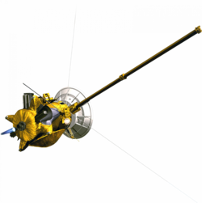

Saturn is the sixth planet from the Sun and the second largest in the Solar System.
It is a gas giant like Jupiter composed primarily of hydrogen and helium.
Saturn is named after the Roman god of time and wealth.
It is most notable for it's prominent rings composed of ice, rock and dust.
Saturn is the most oblate planet in the Solar System, its poles significantly flattened due to rapid rotation.
While its atmosphere is less turbulent than Jupiter’s, it still hosts unique features such as the persistent hexagonal cloud pattern at its north pole.
The planet is orbited by 274 known satellites, 63 of them have received names.
The biggest of those moons is Titan, which surpasses Mercury in size.
Other notable satellites are Rhea, Iapetus, Dione, Tethys, Enceladus, and Mimas.
The rings also harbor countless tiny moonlets that are not counted in the total amount of moons.
Four spacecraft have explored the Saturn system.
Pioneer 11 and the two Voyager probes conducted the initial flybys of Saturn and its moons.
The Cassini-Huygens mission orbited Saturn for over a decade, revolutionizing our understanding of the planet, its rings, and moons before its deliberate self-destruction in the atmosphere in 2017.
Name
Saturn is named after the Roman god of wealth, time and agriculture, father of Jupiter.
In Greek, the planet is named "Cronos" (Κρόνος) after the Greek analogue of Saturn, leader of the Titans.
The ancient Greek name of the planet was Phainon (Φαίνων).
The Hindu god representing the planet is Shani (शनि).
In Chinese the planet is known as "earth star" (土星) and the name is also used in other Sinosphere countries (countries culturally influenced by China).
Orbit and rotation
Saturn orbits the Sun with a semi-major axis of 9.58 AU, varying between 9.2 AU at perihelion and 9.96 AU at aphelion.
The planet completes one revolution around the Sun in approximately 10,759 Earth days (about 29.5 Earth years).
The orbits of Saturn have an eccentricity of 0.056 and an inclination of 2.48° relative to the ecliptic.
Saturn’s rotation is not uniform across its surface due to differential rotation.
At the equator and poles, the rotation period is about 10 hours and 14 minutes, while at other latitudes, it lengthens to 10 hours and 38 minutes.
The internal rotation period, derived from magnetic field measurements, is approximately 10 hours and 39 minutes.
Saturn has an axial tilt of 26.73°.
Physical characteristics
Shape and size
Saturn is an oblate spheroid with a mean diameter of about 116,464 km, or nine and a half times that of Earth, making it the second largest planet after Jupiter.
Its rapid rotation causes a pronounced flattening at the poles at 9.8%, the most of any planet in the Solar System.
Internal structure
Saturn’s internal structure closely resembles that of Jupiter.
The core consists of silicate rock and ice, surrounded by a layer of metallic hydrogen, with liquid helium and hydrogen further out, and a gaseous outer atmosphere.
The extreme pressures and temperatures deep within Saturn may allow for the formation of diamond rain, as carbon crystallizes in the planet’s interior.
This process, while not directly observed, is supported by theoretical models.
A hexagonal cloud at the north pole of Saturn
Atmosphere
The outer atmosphere is composed of 96.35% hydrogen and 3.25% helium.
Trace amounts of ammonia, acetylene, and other hydrocarbons have also been detected.
Saturn’s atmospheric features, such as bands and storms, are less pronounced than those on Jupiter, but the atmoosphere is still dynamic.
Cloud layers vary by latitude: the uppermost clouds are made of ammonia ice, while deeper layers contain water ice and ammonium hydrosulfide.
At pressures of 10–20 bar, clouds of water and ammonia droplets in aqueous solution form.
Storms on Saturn are typically short-lived, example beint a so-called “Great White Spot”.
Persistent vortices are found at both poles, including the famous hexagonal storm at the north pole.
A likely explanation is that it is a standing wave pattern in the atmosphere.
Polygonal shapes have been replicated in laboratory settings through differential rotation of fluids.
The south pole vortex is notably warmer, reaching temperatures of -122°C, compared to the planet’s average of -185°C.
Magnetosphere
Saturn’s dipole magnetosphere is the second-largest in the Solar System, extending over a million kilometers into space.
Its strength at the equator is 0.2 gauss, twenty times weaker than that of Jupiter and slightly weaker than that of Earth.
It is generated by the planet’s metallic hydrogen layer and rapid rotation.
The magnetosphere traps charged particles and interacts with the solar wind, creating auroras at the poles.
It also influences the environments of its moons.
Rings of Saturn, seen by the Cassini orbiter
Ring system
The Saturnian rings are the most prominent and most extensive of all the planets in the Solar System.
They were first seen by Galileo Galilei in 1610, though he didn’t recognize them as rings, and later identified by Cristiaan Huygens.
The rings are composed predominantly of small water ice, tholin impurities and amorphous carbon particles.
They are likely around 10–100 million years old, possibly formed from a shattered moon, refered to as Chrysalis.
Saturn's main rings are only about 5-30 meters thick, but span up to 140,180 km in diameter
They are a complex system with thousands of ringlets, divided into main groups.
The main rings are D, C, B, A, and F.
B and A are the brightest and densest rings, separated by the 4,800 km Cassini Division.
F is also separated by the Roche gap, and is thinner
Other minor outer rings and ring arcs are named after satellites orbiting them, except the G Ring and the Enceladus-formed E ring.
There is also a large, but less prominent torus around Phoebe, the largest irregular satellite of Saturn.
There are 274 moons known to orbit Saturn.
24 are regular satellites that have a relatively stable, circular orbit close to the planet.
They were named after Titans, Giants, and other characters from Greek mythology.
The biggest moon is Titan, a satellite bigger than the planet Mercury.
Other round moons are Rhea, Iapetus, Dione, Tethys, Enceladus, and Mimas.
Out of the irregularly-shaped satellite, Hyperion is the largest.
There are satellites like Pan and Daphnis that are refered to as shepherd moons.
They have distinct equatorial ridges formed from clearing Saturn's rings.
The 250 known irregular moons receie names of Celtic and Inuit gods, and Norse ice giants (with the exception of Phoebe.)
Titan is the biggest satellite orbiting Saturn and is one of two satellites bigger than the planet Mercury, the other being the Jovian moon Ganymede.
Titan has a thick orange athmosphere composed mostly of nitrogen and methane.
Liquid methane lakes are concentrated around the poles, the only possible spots on the surface for them to form.
The biggest lakes are Kraken Mare and Ligeia Mare.
The future mission Dragonfly will make a return to Titan in 2028 and will attempt to make a landing and conduct the first powered and fully controlled atmospheric flight on a natural satellite.
Rhea is the second largest moon of Saturn.
The surface is heavily cratered and has some fractures (chasmata) similar to other cratered planetary bodies.
It is hypothesised that Rhea might have a tenuous ring system.
If confirmed, this would mark the first discovery of rings around a moon.
Iapetus is the third biggest moon of Saturn.
It is composed mostly of ice and has different coloration on both hemispheres.
A mountain ridge along the equator is still unexplained, but one suggestion is that it might have been a collapsed ring system.
Titan, Rhea, and Iapetus. These three comprise the outer major moons of Saturn.
Dione is the fourth biggest Saturnian moon.
Similar to Rhea, Dione is heavily cratered, but features more chasmata and fossae (ridges).
Dione has two trojans, which are also moons of Saturn - Helene and Polydeuces.
Tethys is the fifth biggest satellite of Saturn.
It is an icy body and has one of the biggest craters on planetary bodies in the Solar System - Odysseus.
Just like Dione, Tethys has two trojans that orbit Saturn - Telesto and Calypso.
Enceladus is the sixth biggest moon of Saturn.
It is composed mostly of ice water.
Apart from craters, ridges and fractures, it has numerous geysers that shoot water vapors into space, part of which falls back as snow.
It is suspected that a liquid water ocean is underneath the ice crust, similar to Europa.
Many mission were proposed to search for life on Enceladus, but so far none have been approved.
Mimas is the smallest of the seven gravitationally-rounded moons of Saturn.
It is smaller than the irregularly-shaped moon of NeptuneProteus.
A distinctive feature is the crater Herschel, named after the discoverer of Mimas.
Because of it, the moon resembles the fictional Death Star in Star Wars.
Dione, Tethys, Enceladus, and Mimas. These four comprise the inner major moons of Saturn.
Other regular moons
There are 17 other regular moons of Saturn - their orbits are nearly circular and have low inclinations.
The innermost moon (provisional name S/2009 S 1) is the smallest known Saturnian satellite and orbits near the B ring.
The next eight moons - Pan, Daphnis, Atlas, Prometheus, Pandora, Epimetheus, Janus, and Aegaon are all within the orbit of Mimas.
All but Atlas, Pandora, and Aegaon are shepherd moons, even though Atlas has an equatorial ridge.
Between the orbits of Mimas and Enceladus orbit three more satellites - Methone, Anthe, and Pallene.
The next two are trojans of Tethys - Telesto and Calypso, after which are the trojans of Dione - Helene and Polydeuces.
The last one is Hyperion, outside the orbit of Titan.
It is the largest of the non-round moons and is notable for its chaotic orbit and rotation and porous structure.
Outer moons
The remaining 250 are irregular and are split into Norse, Inuit, and Gallic groups.
They are named after deities from the mythologies of each group's name.
The Inuit group (36 satellites) and the Gallic group (17 satellites) have prograde orbits, while the Norse group (197 satellites) have retrograde orbits.
The most massive irregularly-shaped satellite - Phoebe - is actually part of the Norse group, while it is named after a Greek Titaness.
Siarnaq, Albiorix, and Paaliq are the next largest outer moons.
Early observations
Saturn is one of the planets known since ancient times.
Galileo was the first to look through a telescope at the planet.
He was unable to resolve Saturn's rings, thinking they were two moons.
Cristiaan Huygens used a telescope with greater magnification.
He was the first to distinguish the ring system of Saturn and discovered the biggest moon - Titan.
Giovanni Domenico Cassini discovered four more moons - Iapetus, Rhea, Tethys and Dione.
William Herschel discovered the last two round moons - Mimas and Enceladus.
The first irregularly shaped satellite to be discovered was Hyperion and the first irregularly orbiting was Phoebe.

A model of the Cassini orbiter
Exploration
NASA's first mission to Saturn was Pioneer 11, which made the a flyby of Saturn in September 1979, when it passed within 20,000 km of the planet.
Images were taken of the planet and a few of its moons, at a resolution too low to discern any surface detail.
The spacecraft also studied the planet's rings, revealing the thin F-ring.
The Voyager 1 probe managed to send back the first high-resolution images of the planet, its rings and satellites.
Surface features of various moons were seen for the first time.
Voyager 1 performed a close flyby of Titan, studying the atmosphere of the moon.
The thickness of the atmosphere prevented surface details to be revealed.
A year later Voyager 2 passed the Saturn system, collecting further information about the planet.
Both missions discovered new satellites around Saturn.
ESA joined NASA to launch the Cassini-Huygens spacecraft.
Cassini completed two flybys around Titan before releasing the Huygens lander.
Discoveries during the mission were evidences of liquid water beneath the Enceladus surface and geysers, hydrocarbon lakes on Titan, and new satellites of Saturn.
The mission ended with its deliberate destruction within the atmosphere of Saturn in a similar manner to Jupiter's Galileo.
Proposed missions include a Saturn entry probe, Dragonfly, which is a probe that will explore Titan, and a few candidates for a mission to search for life on Enceladus.